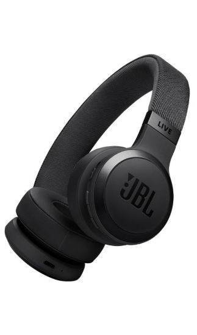

À partir de quand le son devient-il dangereux ?
Le son devient potentiellement dangereux à partir de 85 dB, principalement en cas d'exposition prolongée. La règle est simple : plus le son est fort, moins le temps d'exposition sans risque est long. À 120 dB, la douleur et les lésions peuvent survenir quasi immédiatement.
Silence 40 dB
Bibliothèque 85 dB
⚠ Danger 120 dB
Douleur 140 dB
Avion
Seuil de danger — 85 dB
C'est la limite fixée par la réglementation européenne pour l'exposition professionnelle sur 8 heures. En dessous, le risque est faible. Au-delà, les cellules ciliées de la cochlée commencent à subir des contraintes mécaniques répétées qui peuvent aboutir à leur destruction progressive.
Seuil de douleur — 120 dB
À ce niveau, la sensation douloureuse est immédiate. Le tympan et les osselets peuvent être endommagés mécaniquement. Une seule exposition à un son supérieur à 130–140 dB (explosion, détonation) peut provoquer une surdité brutale irréversible.
Les environnements dangereux pour l'audition
Ces situations du quotidien peuvent exposer l'oreille à des niveaux sonores bien supérieurs au seuil de danger. La durée d'exposition est aussi importante que le niveau.

Ce que le bruit fait à l'oreille… et au corps
Les effets d'une exposition excessive au bruit ne se limitent pas à l'oreille. Cliquez sur chaque conséquence pour en savoir plus.
Comprendre les acouphènes par l'expérience
Les acouphènes sont difficiles à décrire à quelqu'un qui n'en souffre pas. Cette simulation vous permet d'entendre les types de sons les plus couramment rapportés par les personnes qui en souffrent — à faible volume.
🔊 Simulateur d'acouphènes
Ces sons correspondent aux formes les plus fréquentes d'acouphènes. Chaque personne les perçoit différemment — en intensité, en fréquence et en caractère.